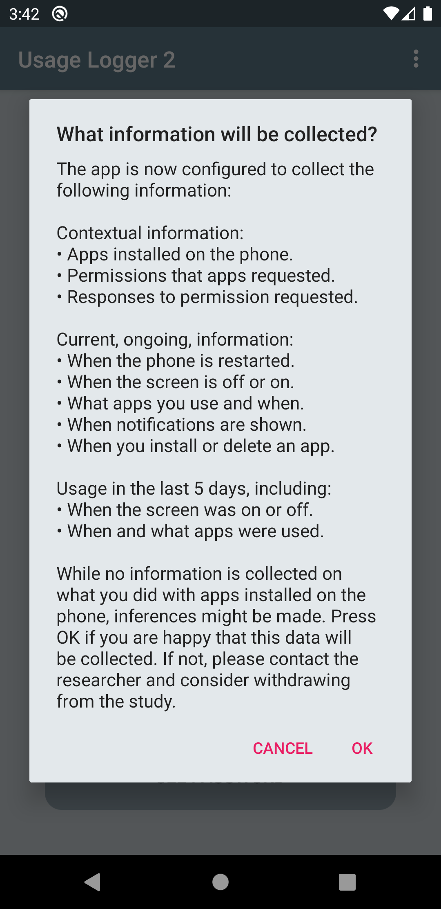
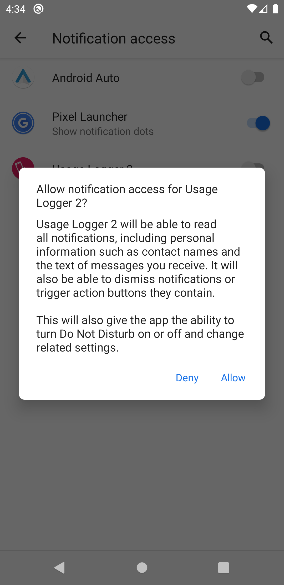

Usage Logger 2 - Walkthrough
Contents
Introduction
Usage Logger 2 is an Android app that records or extracts data about how a person uses their smartphone. Primarily developed to assist with psychological research and behavioural science more generally, the app can be customised to perform a number of different functions. This includes the ability to extract historical data about previous (retrospective) usage from the previous 5 days.
Publications
Geyer, K., Ellis, D.A., Shaw, H. and Davidson, B. I. (2022) Open-source smartphone app and tools for measuring, quantifying, and visualizing technology use. Behavior Research Methods, 54(1), 1-12. doi: 10.3758/s13428-021-01585-7
Geyer, K., Ellis, D. A., Shaw, H., & Davidson, B. I. (2020, July 21). Open source smartphone app and tools for measuring, quantifying, and visualizing technology use. PsyArXiv. doi: 10.31234/osf.io/eqhfa
Other resources
- Android App on Google Play Store.
- Developer video about the app.
- Customise what data the app collects.
- Decrypt collected data.
- Sample data and scripts for analysis.
- Privacy Policy
Customisation
The customisation website allows the researcher to choose how the app will function. There are three different data streams that may be employed and altered. Additionally, the researcher can customise the order that the data sources are queried.
Specify the type of data to collect:
1) Contextual Data
Contextual data provides a researcher with a snapshot of what software is installed on the smartphone. Data captured can include:
- Apps installed: What apps are installed on the device.
- Permissions requested: What permissions have been requested by which apps. Permissions provide access to particular restricted data like phone call logs or location. See here for more information.
- Response to permission request: Has the user provided the permission or not.
2) Continuous Logging
Continuous logging records smartphone interactions after installation of the app. These can include:
- Screen usage: Record when the screen was on/off.
- App usage: Record at what point apps were used and store the identity of the apps.
- Notifications: Record which apps sent notifications.
- Changes in installed apps: Record if any apps were installed/uninstalled.
- Phone usage: Record when the phone was on/off (default setting, not customisable).
3) Past Usage
This will provide information about the phone was used for during the last few days (max. 5 days ago).
Customise Order
Customise the order in which the data is collected by dragging and dropping the text on the right hand of the screen that appears after you have demonstrated that you want a piece of data collected.
If you have fully populated the forms in the website, it might look something like this.

Create QR-Code
Clicking the 'Create QR-Code' button will generate a QR-code image. This is required to customise the app. Users must scan the QR-code from within the app, which will then start the data collection process. The QR-code can also be downloaded, which is useful if you want to reuse the same configuration settings in the future.
Android App
The app can be found here and should look something like below
All participants will need to install this app by going to page in the google play store pressing install. When opening the app it should look like this.
The participant will be informed that this app is only intended for scientific research.
Then the phone will request access to the camera permission. This is essential to scan the QR-Code.

What appears next will be dependent on the type of phone that the participant has, newer phones will ask if permission should only be granted this time or every time when using this app; either is acceptable. Afterwards participants will be asked to press the read QR-Code button to scan the QR-Code required (produced by the customisation website; see above).
After the QR-Code is scanned, it will inform the participant again that this is only intended for use for scientific research
Then the participant will receive a message about what data will be collected by the app

Another message will appear describing the data security to the participant. For a detailed guide of the security please see the preprint.

The participant will be informed about all the permission that is required to carry out the data collection. This will be either Usage permission or notification listing permission or both.
A password will then appear. This can be seen again at any point when the participant presses on the "See password" button.
Permissions
We will then have to accept all the permissions involved:
Notification permission
For the notification permission, the participant will initially informed what is involved.

Then they will have to select from the apps that request the permission notification logger

On selecting usage logger, a screen like this or something similar should appear

The participant will then come into a screen where they only see a checkbox that say "Allow notification access".

A warning message will appear from Android informing of all the potential security problems that emerge as a result. While, this permission provides wide ranging capabilities, this app only record which app is providing notifications and when.
After the participant enables this permission they will return to the app, if they press back. Please do not exit the app to the home screen this may interfere with the running of the app. Instead, just press back after you have accepted this permission
Usage permission
When back at the app, if the participant is required to give the usage permission (which allows for monitoring of the app usage) they will see a pop up (like below) asking them to provide usage permission. If usage permission usage is not required then the app will simply start working (described below).
The usage access permission works in a very similar fashion as notification permission. The participants will initially given a message about what permission is required and what it is used for.

Then the participant will have to click on Usage Logger from the list of apps that want this permission. And then click on permit usage access. No message will appear on doing this.
After the participant enables this permission they will return to the app, if they press back. Please do not exit the app to the home screen this may interfere with the running of the app. Instead, just press back after you have accepted this permission
Running of the app
Because of the customisation website output (see above), the app will collect contextual data, then usage data and finally initiate contextual logging. As a result, the app very quickly recorded the context and past usage. Messages may quickly appear in the background about what is being recorded but this will only last for a second or so.

If the app had been customised to perform the continual logging of smartphone usage then the app would start doing this. When the participant presses next steps, continual recording stops and the rest of the data is collected.
When the participant sees a screen denoting that "Status: Phone usage monitoring ongoing". Then the data is being collected in the background. There is also a notification in the status bar which informs the participant that data is being collected in the background.

When the data collecting is finished, the participant should press the "next step" button and a popup will inform them the final stage is to send the email to the researcher and do they wish to proceed? If they click OK, they will be asked to select an app to supply the encrypted pdf to. We recommend Gmail.


These are various apps that can be shared with but we have only tested with gmail.
The participant needs to communicate the password with the researcher. This should not be done via gmail or some other platform that is also used to send the data. If that method of communication is comprised then the participant's data is quite possibly reported. We recommend using Qualtrics, MTurk or some other platform used to securely record the response for questionnaires.
Decryption and Conversion
The decrypt and convert webpage can be found here.
At this point, the data has been collected and sent to the researcher. However it still needs to be decrypted and converted to a suitable file format. While, you can open the file then enter the password and have access to the pdf table. The pdf table format of the data is not easy to analyse, it needs to be converted into a csv or other format. Various R and python packages that are employed can be used. But the packages don't seem to function well with the usage logger output. This is because those packages typically do not pay attention to the cell division and instead focus on what is on the same line. Therefore, if a long app name requires two lines then half of the name may be entered into a different row and therefore, it can be double-counted.
This website, handles the decryption process specifically for the output of usage logger to avoid such errors. We strongly advise that you use it to decrypt your data

To decrypt the data that you have collected from usage logger simply click on 'select PDF' button, if you have chosen a pdf file then you will be transported to a screen where you will be asked to insert a password. Please supply the associated password, after this process is complete you should automatically have a csv file dropped into your folder with the cleaned data. It will have the same name as the file which you have supplied it.
Analysis
The analysis can be carried out in python and R. For python there are notebooks that are in github which are analyse either the :
A number of R scripts are also provided.
Contact
In case of problems or questions, please contact Dr. Heather Shaw, h.shaw5@lancaster.ac.uk.